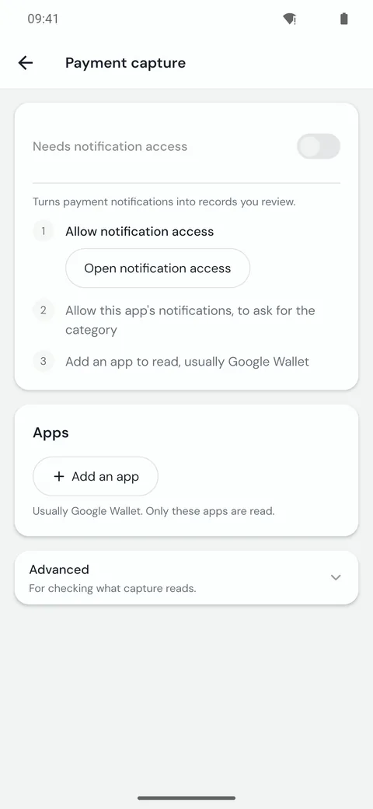
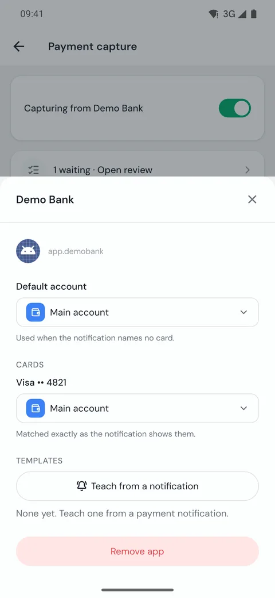
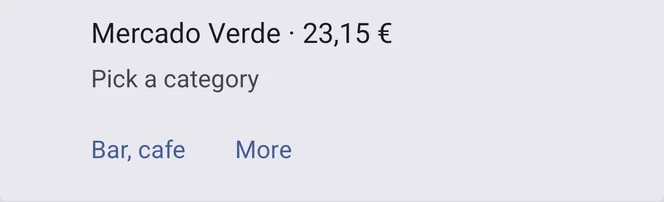
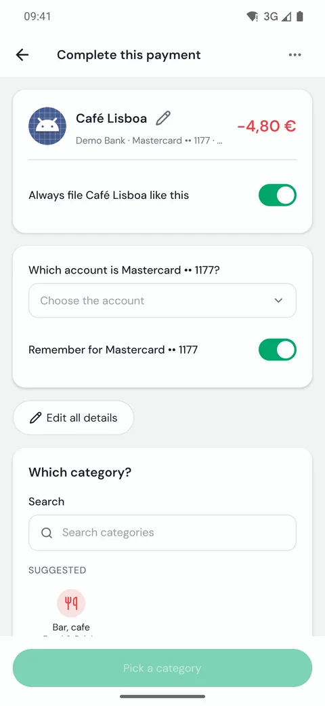
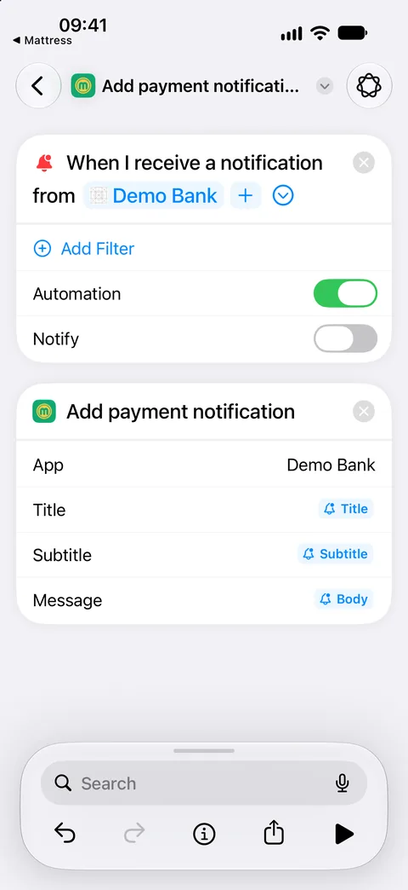
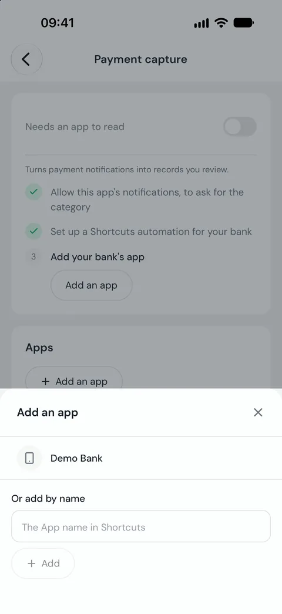

Set up payment capture
Pay with your phone and the payment lands in Mattress, waiting for its category. Payment capture is part of Mattress Pro.
Before you start
Add at least one account in Mattress first. A captured payment needs an account to go to. Capture reads payments in euros; add payments in other currencies by hand. The notification is read on the phone and never sent anywhere.
On Android
Open Settings with the gear at the top of Overview, then Payment capture. The screen lists three steps and shows a button on the next one.
- Tap Open notification access and turn it on for Mattress. Come back to the app and the step is ticked.
- Tap Allow notifications. Mattress uses its own notification to ask for the category after each payment.
- Tap Add an app and pick the app that tells you about payments, usually Google Wallet. Mattress reads only the apps you add.
- Turn on the switch at the top. It should say Capturing from Google Wallet.

Google Wallet is listed as soon as it is installed. Any other app shows in the list only while it has a notification showing.
Choose where payments go
Tap the app under Apps to set it up.
- Default account is used when the notification names no card.
- Cards lists each card after its first payment. Pick the account for each one, even if you have only one account: a notification that names a card needs that card mapped. The card is matched exactly as the notification shows it.

Your first payment
- Pay with your phone. Mattress shows a notification with the merchant and the amount.
- Tap a category on the notification, or More to open the payment and pick another one. The expense is already saved; this only files it.
- If something is missing, like a card with no account, the notification says Payment needs you. Tap Finish and fill in the gaps.
- Back in Payment capture, open the payment under Recent captures and check the merchant, the amount and the account. If they are right, capture is working.


A merchant you filed before goes to the same category on its own, and the notification offers Change in case it is wrong. Payments you have not finished wait in the review inbox. If the payment app later changes the same notification to say the payment was declined or refunded, Mattress removes the expense and tells you.
Apps other than Google Wallet
Google Wallet is read without any setup. For another app, such as your bank's app, teach Mattress how its notifications look:
- Pay once with that app so a payment notification arrives.
- In Payment capture, tap the app, then Teach from a notification, and pick the payment notification. Notifications from the last 7 days are listed.
- Choose what you are marking, then tap its words: the merchant and the amount, and the card if the notification shows one.
- Check What it reads, then tap Save. Capture must be on to save; if it is off, the screen offers Switch on.
If nothing arrives
- Under Apps, each app shows when its last notification arrived and what happened to it. No notification yet means Mattress has not seen one: check that notification access is still on, and that the payment app itself shows notifications.
- Some phones stop apps in the background to save battery. If captures stop after a while, open the phone's settings for Mattress and set its battery use to unrestricted.
- Advanced, then Keep a diagnostic view, shows what capture read from each payment, never the notification text.
On iPhone
iPhone does not let apps read other apps' notifications. From iOS 27, a Shortcuts automation can pass your bank app's payment notification to Mattress instead.
- In Mattress, open Settings, then Payment capture, and tap Allow notifications.
- Tap Show how, then Open Shortcuts. In Shortcuts, tap Library, then Automation, then +.
- Tap Edit at the top to see the actions. Open Automation and pick Notification.
- In "When I receive a notification from App", tap App and pick your bank's app. Leave Automation on.
- Search for Add payment notification and pick the one from Mattress. Set App to the bank's name, for example "Millennium", and use the same name every time.
- Tap Title, then Select Variable, and pick Notification. Tap it again and choose Title. Do the same for Subtitle with Subtitle, and for Message with Body. Go back to save it.

- Pay once with your card so a payment notification runs the automation. Until it has run once, the switch in Mattress stays off.
- Back in Mattress, tap Add an app and pick your bank.
- Turn on the switch at the top.
- Teach the template from that first payment notification, as described above.

Before iOS 27, or without the automation, add payments by hand or connect your bank to sync them.